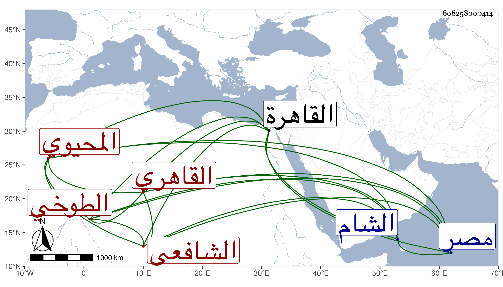

0902Sakhawi.DawLamic.ITO20230111-ara1.EIS1600.608258000414
Biography ID: 608258000414
782
عبد القادر بن محمد بن محمد بن علي بن شرف بن سالم المحيوي أبو البقاء الطوخي القاهري الشافعي ويعرف أبوه بابن رضى وهو بالطوخي . ولد في يوم الجمعة ثاني عشر ربيع الآخر سنة اثنتي عشرة وثمانمائة بالقاهرة ونشأ بها فقرأ القرآن عند الشهاب الطلياوي وحفظ العمدة وألفية الحديث والنحو والمنهاج الفرعي والأصلي وعرض على جماعة منهم الجلال البلقيني والولي العراقي والشمس البوصيري وابن الديري وقارئ الهداية وتلا بالقرآن تجويدا بل ولأبي عمرو وابن كثير على إبراهيم القزاز وأخذ الفقه عن الشمس والمجد البرماويين والنور على بن لولو وحكي لنا عنه مما شاهده من كراماته والشرف السبكي في آخرين كالقاياتي والونائي وهو أحد القارئين عليه في تقسيم الروضة والنحو عن ناصر الدين البارنباري والشهاب بن هشام والبرهان بن حجاج الابناسي والشمس الشطنوفي ولازمه والأصول عن البساطي والجلال الحلواني والشمس الكريمي أحد أصحاب السيد بل وممن حضر عند التفتازاني وحضر عند النظام الصيرامي في شرح المواقف بقراءة شيخه الشهاب بن هشام والمنطق عن الشمس الهروي عرف بابن الحلاج والحلواني والفرائض والميقات وغيرهما عن ابن المجدي والبارنباري وشرح النخبة وغالب شرح ألفية الحديث كلاهما عن شيخنا وكتب عنه من أماليه جملة بل ومن الأدب من فتح الباري إلى آخره ووصفه بخطه في سنة اثنتين وأربعين بالامام العلامة المفنن ، وكذا كتب عن الولي العراقي من أماليه وسمع عليه وعلى الشهابين الكلوتاتي والواسطي والشموس ابن الجزري والبرماوي وابن المصري وابن الديري والشامي الحنبلي والنور الفوي والفخر الدنديلي والزين القمني ورقية التغلبية بل قرأ في سنة ست وعشرين صحيح البخاري علي الشهاب المتبولي وبعد ذلك الكثير على السعد بن الديري واليسير على ناصر الدين الفاقوسي وأجاز له الكمال بن خير وجماعة وكتب المنسوب على الزين عبد الرحمن بن الصائغ وباشر التوقيع بباب القاضي سعد الدين فبرع فيه واستصحبه الونائي معه إلى الشام حين ولي قضاءه فكان هو القائم بغالب المهمات وحضر حينئذ دروس فقيهها التقي بن قاضي شهبة وأذن له في الافتاء والتدريس وناب عن الونائي هناك بل ناب قبل في شعبان سنة تسع وثلاثين بالديار المصرية عن شيخنا والنواب إذ ذاك عشرة عوض البدر بن الامانه بعد وفاته وصار ينوب عن من بعده لكنه حسبما حكاه لي لم يباشر عن الصلاح المكيني فمن بعده شيئا وخالط أبا الخير بن النحاس في أيام ضخامته لسابق معرفة بينهما من زيارة الليث ونحوها وتكلم عنه في كثير من الأمور فامتحن معه بعد زوال عزه على يدي المناوي بما يستبشع ذكره فضلا عن صنعه ولم يعامله المناوي بما يليق بأمثاله مع ما بينهما من الرضاع بل فقد ... عليه ما شافهه به في مجلس الجمال ناظر الخاص وأظن أن ذلك عقوبة عن جنايته في حق شيخنا وغير ذلك وأخذ بعد ذلك في التقلل من مخالطة الناس شيئا فشيئا بحيث كان الانعزال أغلب أحواله والأسقام تعتريه كثيرا ، هذا كله مع تقدمه في الفضائل وجودة فهمه ومحاسنه الجمة التي قل أن تجتمع في غيره والكمال لله وقد درس وأفتى لكن قليلا ولو تصدى قبيل موته لذلك لانتفع الناس به وممن قرأ عليه البدر المارداني والشرف عبد الحق السنباطي والبهاء المحرقي وغيرهم من الفضلاء وكنت ألومه على عدم التصدي لذلك فيعتذر بأشياء غير طائلة مع كونه قرأ الشفا وغيره بمجلس ابن مزهر ، وقد صحبته قديما واستفدت منه أشياء وسمعت خطابته بل وقراءته على الونائي في تقسيم الروضة ، وحج سبع مرار جاور في اثنتين منها وولي قضاء الركب في اثنتين أيضا وكذا ولي تدريس الحديث بجامع الحاكم عقب وفاة السندبيسي وافتاء دار العدل عوضا عن شيخنا بل كان عين لتدريس التفسير بالمنصورية فوثب عليه فيه أبو الفضل المغربي ومشيخة التصوف بجامع الرحمة عوض البدر البغدادي والفقه بالحسنية عوض ابن الفالاتي بل كان قد استقر فيها قبله وأعرض عنها اختيارا وبالمنكوتمرية عوضا عن التقي القلقشندي مع كونه كان غائبا في الحج وربع الخطابة بجامع الأزهر عوض التاج امام الصالح مع امامة جامع الصالح أيضا وتكلم في أوقاف جامع طولون وكذا كان معه الشهادة بوقف السفطي وبطشتمر حمص أخضر وفراشه بالحرم المدني وجنده مع المشايخ قديما بالقلعة إلى غير ذلك وكتب بخطه في انجماعه جل الخادم . مات بعد توعكه مدة بذات الجنب وغيره في يوم الأحد العشرين من رجب سنة ثمانين وصلى عليه من الغد بجامع الأزهر ثم تجاه الحاجبية بباب النصر في جمع حافل في كليهما ، ودفن بالقرب من تربة الست زينب في أول الصحراء رحمه الله وإيانا .
